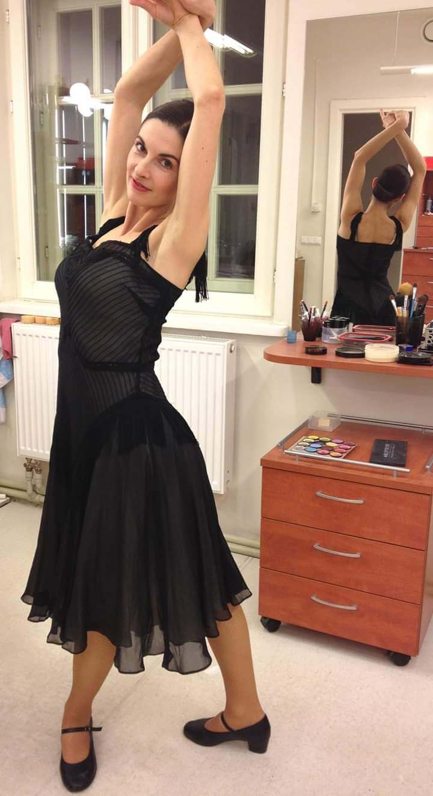

JULIJOS KOKSAROVOS KLASIKINIO IR ŠIUOLAIKINIO BALETO STUDIJA...
JULIJOS KOKSAROVOS KLASIKINIO IR ŠIUOLAIKINIO BALETO STUDIJA
-
Laisvės al. 57, Kaunas
-
Tel.:+370 611 85107
-
El. paštas: julijakoksarova@gmail.com

-
2007 m. baigė Lietuvos muzikos ir teatro akademijos baleto skyrių;
-
2007-2010 m.tapo baleto soliste ir atliko pagrindinius vaidmenis Nacionaliniame operos ir baleto teatre;
-
2010-2019 m. dėstė vaikams klasikinio baleto meistriškumo pamokas.
-
2011-2014 m. šoko „Vilniaus balete“;
-
2020 m. pavasarį įkūrė "Julijos Koksarovos klasikinio ir šiuolaikinio baleto studiją.